Who really built the pyramids?
Xeno-Wonder is a resource management strategy game where you play as an ancient alien UFO building a pyramid wonder. The game was made over the course of 3 weeks during GitHub’s Game Off 2022 game jam with a team of 3 game developers.
Made by
Sound & Music: Miles Caraker
Art: Alec Chou
Game Design & Programming: Cole Pergerson
Tools
The game was developed using Unity game engine
C# for programming
Maya and Photoshop for art production
Google sheets for game design
Sounds were made in __?__ and imported into Unity
Assets were managed and shared across the team using Github
Brainstorming
We came up with two ideas, an ancient aliens inspired strategy game, or a physical based puzzle game where you play as common game ideas, like an explosive barrel. Through a vote, we settled on the first idea and began sketching.

Here is an early blender sketch to visual what we were imagining. Besides the camera angle, the sketch closely resembles what the final game ended up looking like.
We had the following requirements for the game
- UFO has a fixed height and can move in 8 directions
- Most objects can be picked up and drop.
- When two objects are put together, they will combine into a new object.
- If the pyramid build progress is set to 100%, the player wins the game.
- If the pyramid build progress is set to 0%, the player loses.
- When barbarians combine with the pyramid, build progress depletes.
To generate ideas, we used a matrix to list all of the possible combinations. We had a fun imagining how this game could play out as a simple civilization-like game. To simply the scope, we chose the most important objects to the game experience to prioritize, those being: people, rock, brick, pyramid, and barbarian.
We knew early on that the people object was going to be the most important resource of the game. It would be used to generate rock, the resource necessary to win, as well to defeat barbarians, who would deplete the build progress if the reached the pyramid, and lastly, the only way to make people was to combine people together. Se envisioned the player having to make tough decisions when faced with a limited supply of people and a horde of barbarians.
Dialing in the MVP
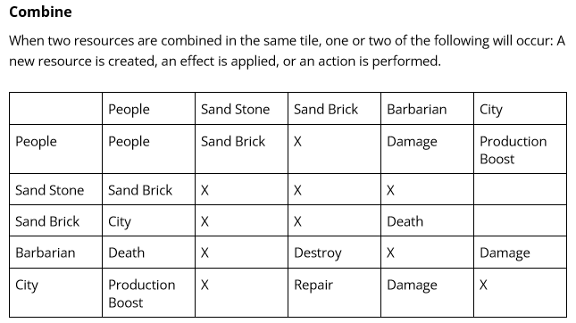
Priority Verbs
- Combine: Two object are placed together and an output is created after X time
- Destroy: Tileobject is removed from the game
- Damage: The health or value of a Tileobject is reduced
- Production Boost: The combination rate of a Tileobject is increased
With a limited supply and increasing pressure of barbarians, players would need to efficiently manage the combinations of their people. Using all of your people to make rock would greatly increase the build progress, but will later expose you to hordes of barbarians. Just focusing on barbarians, however, would not be beneficial in the long run since their spawn rate would increase over time.
Damage and Production Boost were later cut to make the game simpler to understand. In all but the people-with-people combination, the two input Tileobjects were destroyed to create a new TileObject. This expectation was broken whenever the damage verb was used, since input Tileobjects could still live after combining if their health was greater than zero. The production boost verb was cut since the role of the city changed over the course of production and no longer had a use.
Early Programming Progress
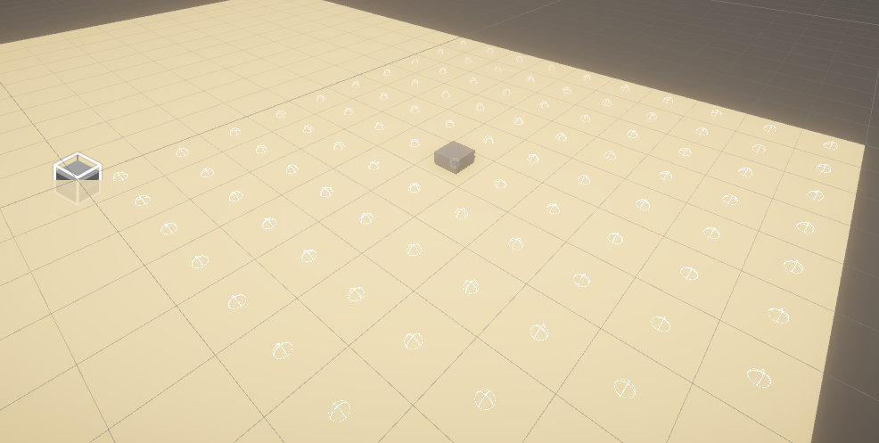The first task on the todo list was the grid. The grid was a requirement for the player to drop and pick up objects from the ground, and barbarians needed to use a grid for their path-finding.
Here is some snippets of the code from the EasyGrid and Tile class
EasyGrid class
namespace AncientAliens.GridSystem
{
public static class EasyGrid
{
// variables
// properties
public static void InitializeGrid(float tileSize, int gridSizeX, int gridSizeY)
{
TileSize = tileSize;
SizeX = gridSizeX;
SizeY = gridSizeY;
Tiles = new Tile[gridSizeX, gridSizeY];
for (int i = 0; i < gridSizeX; i++)
{
for (int j = 0; j < gridSizeY; j++)
{
Vector3 pos = new Vector3(i * TileSize, 0, j * TileSize);
Tile Tile = new Tile(new Vector2(i,j), pos, TileSize, false);
Tiles[i, j] = Tile;
}
}
}
public static Vector3 SnapToGrid(Vector3 position)
{
int x = (int)Mathf.Floor(position.x / TileSize);
int z = (int)Mathf.Floor(position.z / TileSize);
if (x < 0) x = 0;
if (x >= SizeX) x = SizeX - 1;
if (z < 0) z = 0;
if (z >= SizeY) z = SizeY - 1;
return Tiles[x, z].center;
}
// GetTileAt()
// AssignTileObjectToTile()
// more functions
}
}
Tile class
namespace AncientAliens.GridSystem
{
public class Tile
{
TileObject[] tileObjects;
public Vector2 index;
public Vector3 worldPosition;
public Vector3 center;
public bool isLocked; // could mean either an obstacle or the tile is full (combining)
// pathfinding variables
public Tile(Vector2 index, Vector3 worldPosition, float size, bool locked)
{
this.index = index;
this.worldPosition = worldPosition;
isLocked = locked;
tileObjects = new TileObject[2];
center = new Vector3(worldPosition.x + size / 2, 0, worldPosition.z + size / 2);
}
// fucntions for getting TileObjects in this Tile ....
}
}
Shortly after, the pick up and drop mechanic were implemented. Next was combining
In TreactorBeam.cs
public bool PickUpTileObject()
{
var tile = GetTileBelow();
if (tile == null)
{
if (DEBUG) print(gameObject + ": Tile is NULL");
return false;
}
var tileObject = tile.ExtractTopTileObject();
if (tileObject == null)
{
if (DEBUG) print(gameObject + ": Failed to get tileObject");
return false;
}
// ....
this.tileObject = tileObject;
// ....
return true;
}
public bool DropTileObject()
{
var tile = GetTileBelow();
if (tile == null)
{
if(DEBUG) print(gameObject + ": Tile is NULL");
return false;
}
var result = tile.AddTileObject(tileObject);
if(result == true)
{
// ....
SetTileObjectPositionToTile(tile);
// ....
tileObject = null;
return true;
}
else
{
if (DEBUG) print(gameObject + ": Failed to add tileObject to tile at " + tile.index);
return false;
}
}
Basic iteration of combining was done
Combination logic was put into the GameManager class, a singleton class that could be accessed anywhere. In the Tile class, when two Tileobjects are assigned to its location, it will call GameManager.Instance.Combine(). The Contains() function of List was used to make the code more readable.
I wish I came up with a better way to detect combinations as this was not scalable.
In gamemanager class
public void Combine(TileObject a, TileObject b, Tile location)
{
List types = new List();
types.Add(a.Type);
types.Add(b.Type);
var success = false;
if (types.Contains("People") && types.Contains("SandStone"))
{
var combineObj = Instantiate(PeopleAndSandStoneCombine);
if (combineObj.TryGetComponent(out PeopleAndSandStoneCombine combine))
{
combine.Execute(a, b, location);
activeCombinations.Add(combine);
success = true;
}
else { Debug.LogError("Missing class"); }
}
if (types[0] == "People" && types[1] == "People")
{
var combineObj = Instantiate(PeopleAndPeopleCombine);
if (combineObj.TryGetComponent(out PeopleAndPeopleCombine combine))
{
combine.Execute(a, b, location);
activeCombinations.Add(combine);
success = true;
}
else { Debug.LogError("Missing class"); }
}
if (types.Contains("SandBrick") && types.Contains("Wonder"))
{
// .....
}
// ......
}
GameManger would create a TileObjectCombine gameobject in the tile location that the combination was occurring. For each possible combination, a child class of TileObjectCombine was created containing context specific logic.
Combine parent script
namespace AncientAliens.Combinations
{
public abstract class TileObjectCombine : MonoBehaviour
{
protected TileObject tileObjA;
protected TileObject tileObjB;
[SerializeField] protected GameObject output;
protected Tile _location;
protected float combineTime = 1;
protected Image progressGraphic;
protected float starttime;
// ....
protected virtual void Awake()
{
var obj = transform.GetChild(0).GetChild(1);
// ....
transform.parent = GameManager.Instance.CombineContainer;
}
// ....
public abstract void Execute(TileObject a, TileObject b, Tile location);
public virtual void Cancel()
{
StopAllCoroutines();
Location.isLocked = false;
Location.ClearTile();
tileObjA.DestroySelf();
tileObjB.DestroySelf();
// ....
Destroy(this.gameObject);
// ....
}
protected abstract IEnumerator ProcessCombineAction();
// ....
}
People and People Combination
namespace AncientAliens.Combinations
{
public class PeopleAndPeopleCombine : TileObjectCombine
{
// ....
public override void Execute(TileObject a, TileObject b, Tile location)
{
tileObjA = a;
tileObjB = b;
this.Location = location;
transform.position = location.center;
location.isLocked = true;
combineTime = GameRules.peopleAndPeopleCombineTime;
tileObjA.transform.Rotate(new Vector3(0, 90, 0));
StartCoroutine(ProcessCombineAction());
StartCoroutine(CombineTimer());
tileObjA.aniControl.PlayCombiningPeopleAnimation();
tileObjB.aniControl.PlayCombiningPeopleAnimation();
if (playsSound)
{
soundPlayer.PlayCombineStartSFX();
soundPlayer.PlayCombineLoopSFX();
}
}
protected override IEnumerator ProcessCombineAction()
{
yield return new WaitForSeconds(combineTime);
Location.isLocked = false;
var newTileObject = Instantiate(output, Location.center, Quaternion.identity);
if (newTileObject.TryGetComponent(out TileObject tileObjOutput))
{
Location.ClearTile();
Location.AddTileObject(tileObjOutput);
tileObjA.aniControl.PlayIdleAnimation();
tileObjB.aniControl.PlayIdleAnimation();
tileObjA.transform.Rotate(new Vector3(0, 0, 0));
// GetClosestEmptyTile() is limited to only the adjcent tiles. If all 8 tiles are full, then destroy the tileObject.
// This is not intended design, but a temporary solution
var tile1 = Location.GetClosestEmptyTile();
if (tile1 != null) tile1.AddTileObject(tileObjA);
else tileObjA.DestroySelf();
var tile2 = Location.GetClosestEmptyTile();
if (tile2 != null) tile2.AddTileObject(tileObjB);
else tileObjB.DestroySelf();
if (playsSound)
{
soundPlayer.StopCombineLoopSFX();
soundPlayer.PlayCombineEndSFX();
}
HideTimer();
Destroy(gameObject, 2);
}
}
}
}
One thing you may have noticed was that I was often creating and destroying gameObjects. The programming overlords would not be proud of me—I never used object pooling. In my mind, object pooling added another level of complexity and, since I was prototyping, I didn't bother thinking about it. As the deadline approached, the effort of implementing object pooling became larger. Looking back, it would probably a good idea to add it in the beginning of the project.
A very very rough pyramid
The first basic gameplay loop was almost finished. The player could win the game, by dropping brick into the pyramid until progress reached 100%. To finish core loop, the next task was to add the barbarians.
Sebastian Lagues A* video was used to implement pathfinding for barbarians. Since a node graph was already implemented, all that was needed was to understand the theory, and then use the algorithm that Sebastian wrote. Some minor adjustments were made to flavor code to our game.
With the core loop finished and about 2 weeks left, we felt pretty confident with finishing. The was missing most of the art and sounds, and there had been no balancing.
From Pathfinding.cs
IEnumerator MoveToPathOverTime()
{
//Tile currentTile = EasyGrid.GetTileAt(transform.position);
int index = 0;
pathReached = false;
while(index < pathToTarget.Count)
{
//currentTile = EasyGrid.GetTileAt(transform.position);
if (isPaused || GameManager.Instance.GamePaused)
{
yield return new WaitForEndOfFrame();
continue;
}
yield return new WaitForSeconds(2);
if (GameManager.Instance.GamePaused)
{
continue;
}
var thisTile = EasyGrid.GetTileAt(transform.position);
if (thisTile.ContainsTileObjectByType("People"))
continue;
Tile nextTile = pathToTarget[index];
var hasPeople = nextTile.ContainsTileObjectByType("People");
var tileHasFilterTileObj = pathfinding.ContainsFilteredTileObject(nextTile, typeFilter);
if (!tileHasFilterTileObj && nextTile.GetTileObjectCount() < 2)
{
EasyGrid.GetTileAt(transform.position).RemoveTileObject(tileObject);
EasyGrid.AssignTileObjectToTile(gameObject, (int)nextTile.index.x, (int)nextTile.index.y);
onMoved?.Invoke();
index++;
}
else if(nextTile.GetTileObjectCount() == 2)
{
GameManager.Instance.CancelCombineAt(nextTile);
// duplicate code, I can do better
EasyGrid.GetTileAt(transform.position).RemoveTileObject(tileObject);
EasyGrid.AssignTileObjectToTile(gameObject, (int)nextTile.index.x, (int)nextTile.index.y);
onMoved?.Invoke();
index++;
}
else
{
var target = pathToTarget[pathToTarget.Count - 1];
pathToTarget = pathfinding.FindPath(EasyGrid.GetTileAt(transform.position).index, target.index, typeFilter);
index = 0;
}
}
pathReached = true;
onPathReached?.Invoke();
//print("Finished");
}
Adding Art
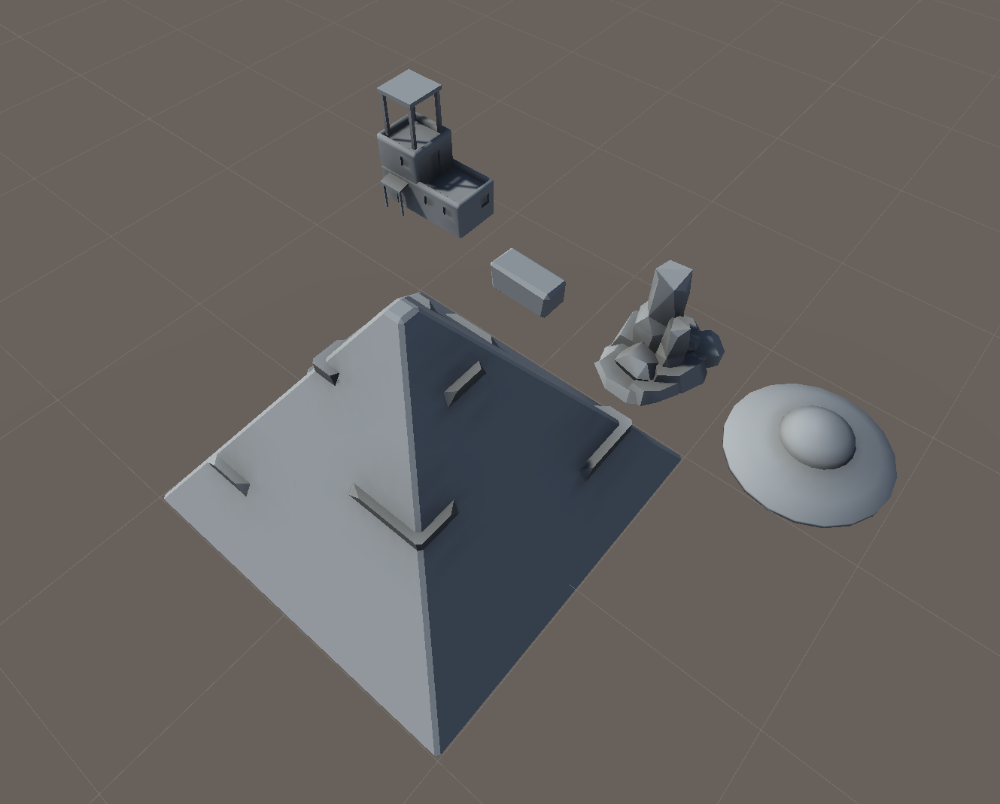The most important models were prioritized in the beginning, those being the UFO, rock, brick, city, people, barbarian, and pyramid.
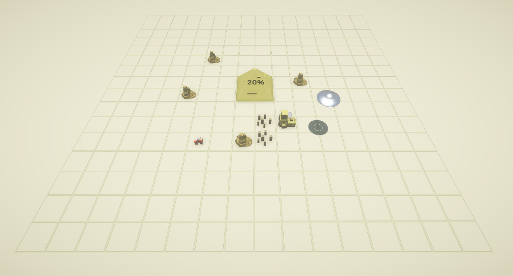Here is a image that was taken after the first wave of art assets were imported. The grid was made using Unity's shader graph. People and barbarian objects were not yet implemented (the artist thought the blocks outs were fine lol).
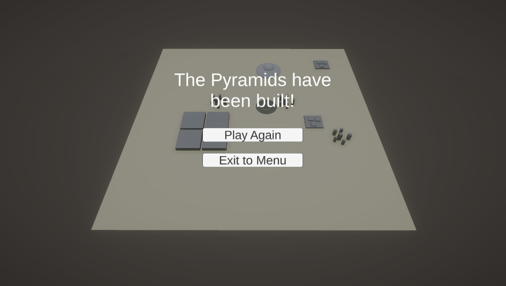First iteration of people and barbarians were added shortly after. While the people models were fine, the barbarian models did not look like barbarians. The rocks became thinner so that the brick could stand out more post combination. During this version, rocks depleted in value after combination, so the brick tile object would sit on top of the rock. In the final version, rocks were always destroyed post combination. Dune models were added to act borders while also immersion the player into the desert.
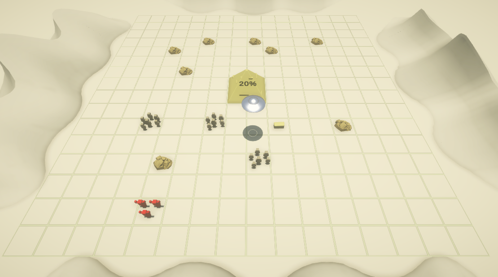To convey to the player that the pyramid was really being build, different phases of constructions were implemented.
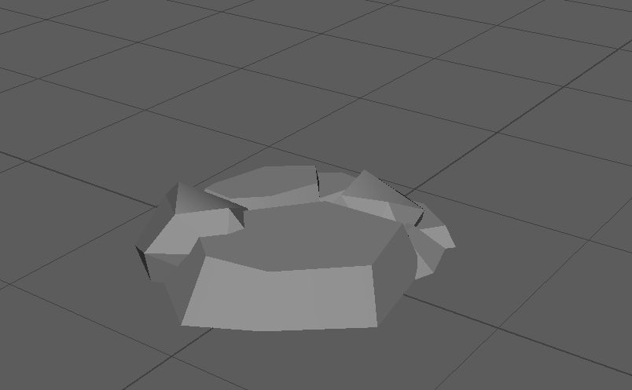The second iteration of barbarian and people were added. These were much more detailed and had their own animations. All animations were downloaded from Mixamo.
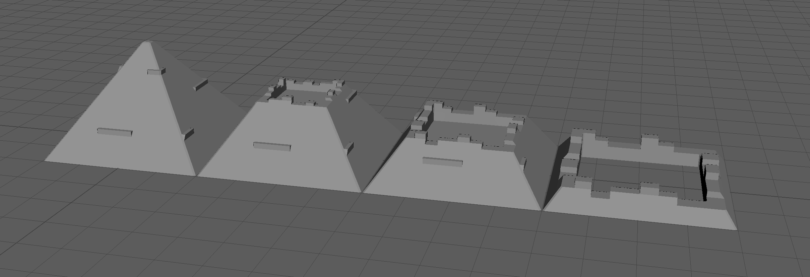Before this point, the lighting was too basic and made any combination of colors look bland. This was only because the directional light was pointing directly down so that the UFO shadow acted as a marker. After the sun angle was changed, colors were updated, and post-processing was improved, the game looked so much better.
Cole - Now I realize it, the game looks like it’s set the planet of Arrakis from the DUNE movie. I made the colors and lighting too dark…too cinematic. The game would of benefitted from a brighter and vibrant look. Well that’s what happens when I am in charge of colors…
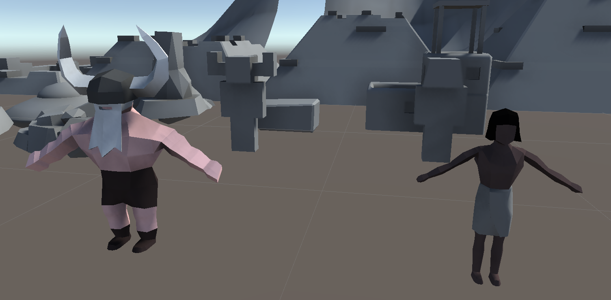
A marker was added so that player will know what is below the UFO. When the UFO picked up any tileobject, a cool tractor beam effect played.
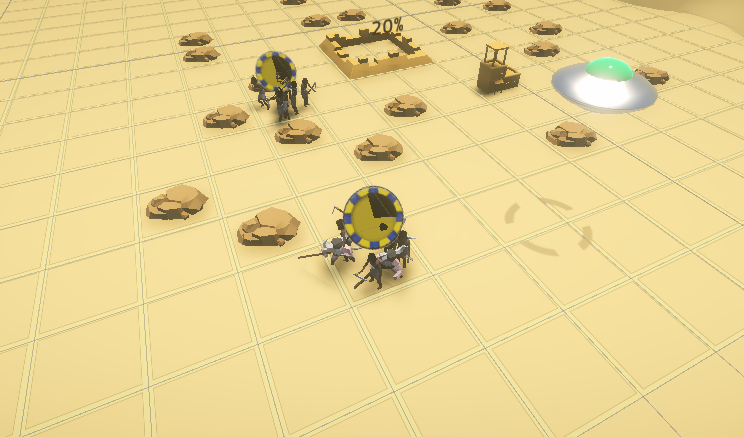 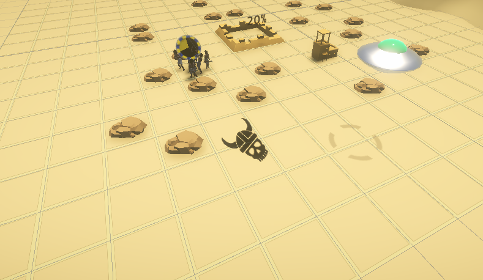To better convey the mechanics of the combinations, a timer and outcome icon was implemented. The timer appears when a combination starts and represents the amount of time left before the combination ends. When the combination ends, an icon appears indicating the outcome to the player.
Sound
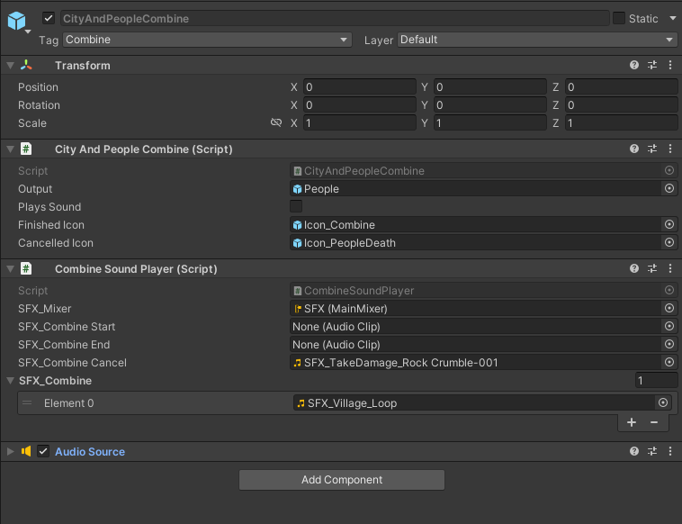In the beginning of the project, all the required sounds were outlined in a spread sheet. Like art, it was important to get sounds into the game early. Some of the first sounds implemented were the UFO flying, pick up, and drop sounds. Afterwards, more sounds were added in batches and were quickly implemented. It’s better to add audio support into to the code as early as possible so that any audio issues are quickly discovered and making significant code changes are less costly.
Art and Sound Pipeline
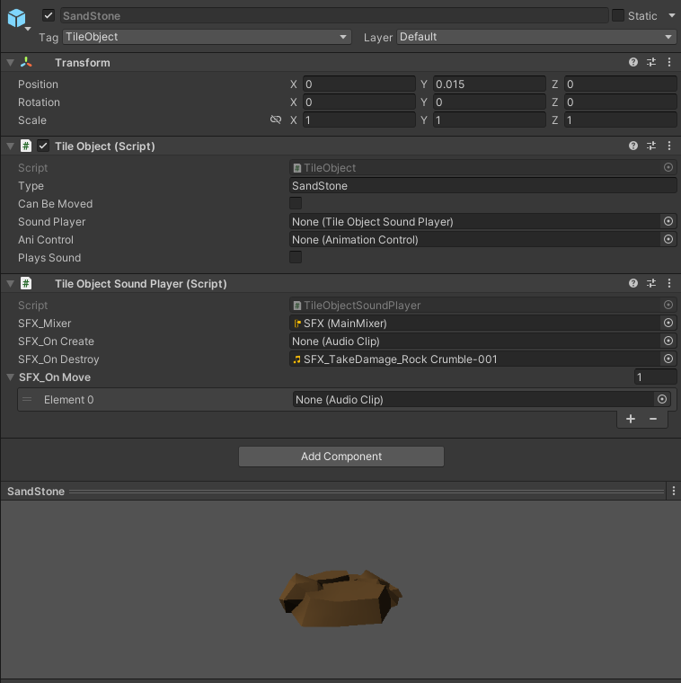To implement art and sound assets into the game, prefabs and inspector variables were heavily used. The process was initially convenient, but slowly became a tedious task and slight mess. Making any kind of update meant browsing numerous nested folders and constantly opening different prefabs.
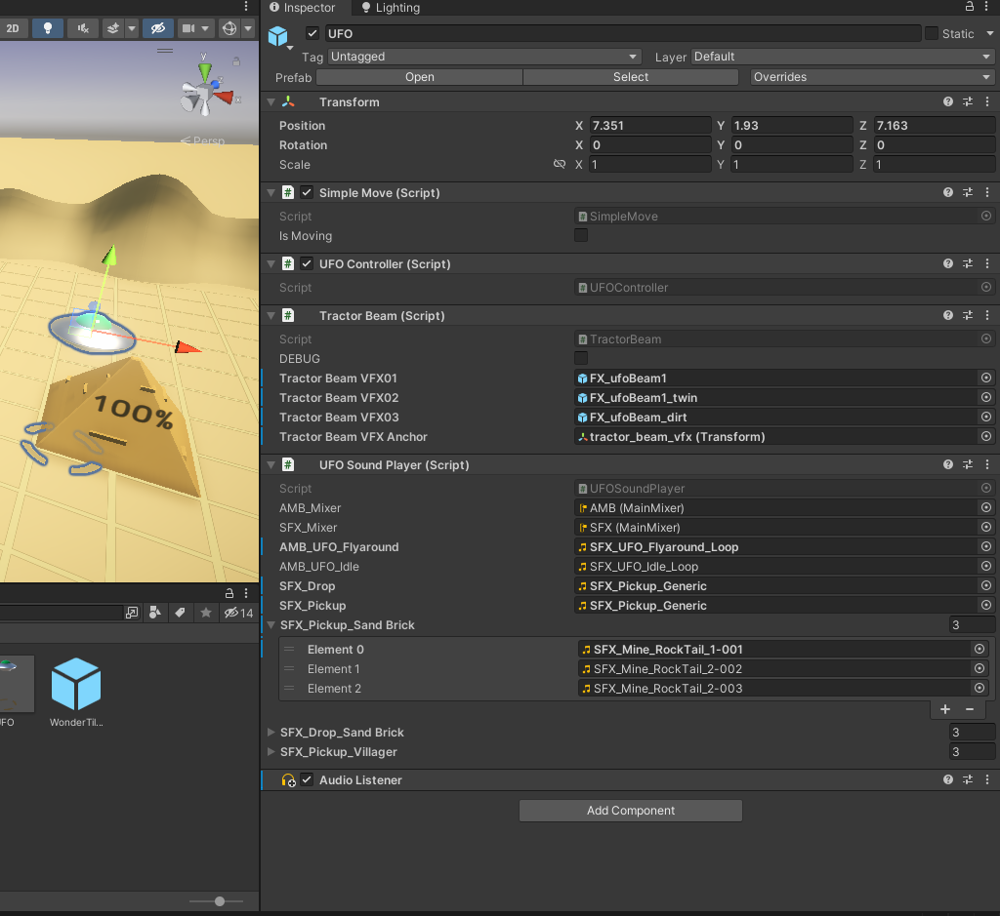Balancing The Game
One thing to be proud of is the fact that this game offers players a challenging experience and many more minutes of replay-ability just with a few simple mechanics. There is an elegance to keeping design simple, however deep down, there is a feeling that the game needs more. What else could be added, changed, or evolved? It is clear that the design is not yet complete but the missing ingredients are some where out there, waiting to be discovered.
Game rules
using System.Collections;
using System.Collections.Generic;
using UnityEngine;
namespace AncientAliens
{
public static class GameRules
{
// Wonder
public static int startWonderProgress = 5;
public static int maxWonderProgress = 100;
public static int brickProgressValue = 10;
// Level
public static int startingRockCount = 20;
//UFO
public static float ufoMaxSpeed = 4f;
public static float ufoCurrentSpeed = 0;
public static float ufoSandBrickSlowDown = 0.4f;
// TileObjects
public static int peopleValue = 5;
public static int rockValue = 1;
public static int brickValue = 5;
public static int barbarianValue = 5;
public static int cityValue = 10;
// BarbarianAI
public static float barbarianActionTick = 1;
public static int damageToWonder = 2;
public static int damageToPeople = 5;
public static int damageToCity = 10;
public static string[] barbarianTypeFilter = { "Barbarians", "SandBrick", "Wonder" };
// Combinations
public static float cityAndPeopleCombineTime = 10;
public static float peopleAndBarbarianCombineTime = 5;
public static float peopleAndPeopleCombineTime = 15;
public static float peopleAndBrickCombineTime = 20;
public static float peopleAndRockCombineTIme = 8;
}
}
Strategy
When the MVP was finished, all the variables were arbitrary set for testing purposes. As a result, the game was very difficult to beat and the pacing was too fast to think. Over the course of 2 weeks, many of the variables in the GameRules script were increased or decreased until a sweet spot was found. A good practice that was followed was Sid Meier’s advice that, when balancing a game, values should be either doubled or halved.
Out of all the variables, barbarian spawn rate and people production were changed the most. This was because difficulty increased as barbarians spawn rate was raised and people production rate was dropped. Combination time for brick and cities mostly influenced the pacing of the game, but did have some impact on difficulty.
Playtesters were extremely helpful in revealing what aspects of the game needed to be balanced. Our first round of playtesters had discovered that having a large amount of people to defend and mine resources made the game easy, so it clear that people production needed to remain high. However, the barbarians were too stressful for players when there aren’t enough people in the field. Their spawn rate was initially constant, spawning every 5 seconds, but raising the spawn rate would make the game too easy during the mid and late game.
It became obvious that a constant spawn rate was not going to work, so a new system was implemented that decreased the spawn rate exponentially over time. This gave the player an easy environment in the beginning but then increased in difficulty over the course of the game. Furthermore, cities instantly became a clear necessity for the mid and late game since they produced people at a faster rate.
Spreadsheets
To better understand the relationships between all of our game objects, variables were tracked and measured in spreadsheets.
Below is a chart that tracks brick production. The top set of values shows how many bricks are produced per minute if the player doesn’t use cities. Cities produce people at a faster rate, but take more time to create and have a higher resource cost. The bottom values show how many bricks can be made per minute if the player only uses cities.
The amount of bricks produced per minute is determined by the amount of committed workers multiplied by a 1 minute divided by the combined time of brick production and people production.
The player is likely to lose if they don’t use cities as people production is too slow when combining people together, so they must plan to build cites in the long term. If the player can manage to build two cities, then they can win in under 1 minute and a half. This equation doesn’t take into account the time spent transporting Tileobjects or fighting barbarians since that would overly complicate the model.
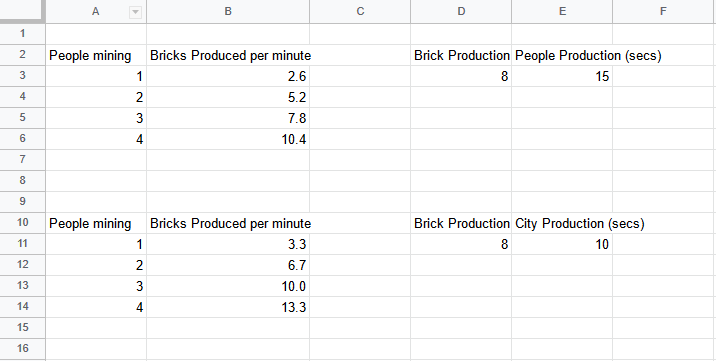Here is a chart that tracks barbarian spawn rate. Since we didn’t expect the game to last for more than 3 minutes, the rate of barbarians was tracked every 20 seconds. The spawn interval decreases exponentially, using the depreciation rate. As the spawn rate decreases, the amount of barbarians that the player must face rises. There is a minimum spawn interval so that the player is not swarmed in the event that the player plays longer than 3 minutes.
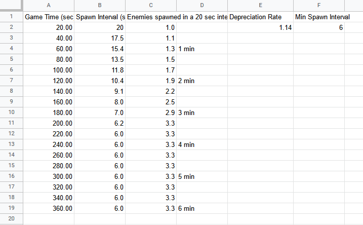 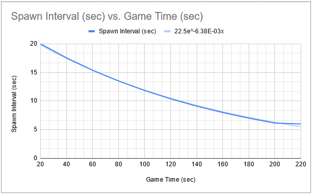After 1 minute, the player has to deal with a barbarian every 15 seconds. If the player hasn’t started the production of a city by this point, the pressure of the barbarians will begin to feel overwhelming.
Playtesting
Biggest take away from playtesting was the realization that no one knew how to play Xeno-Wonder. The combining mechanic was not obvious and players weren't experimenting with different combinations. It wasn't until the final week when the realization sank in but there so many other small details that needed to be addressed, that fixing such a fundamental problem seemed too exhausting. Of course, it was only after the game was released when all of the easy solutions came to mind.
After the release, tile highlights were added to indicate to the player which TileObjects could be combined with the current held Tileobject. UI is likely the best approach for helping people understand how to play since it pairs abstract logic with a visual sign that is memorizable and more intuitive.
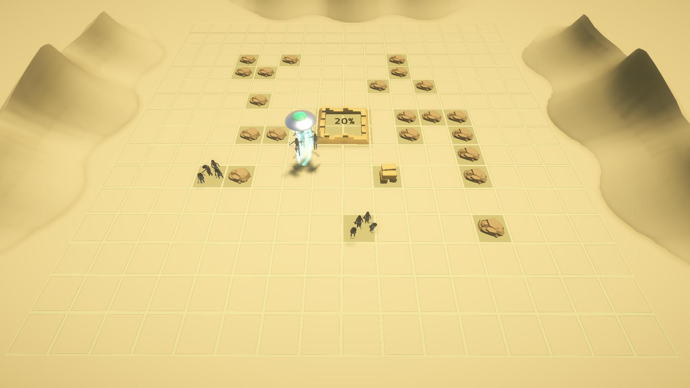A strategy guide was added to the store page, as well as, a list of all the combinations. Although people tend to not read the descriptions before jumping into a game, let alone, whole paragraphs, so this wasn't an effective way to help players understand the game.
Combinations list
Combine tile objects together to create new tile objects
People + People = People
People + Rock = Brick
People + Brick = City
City + People = People
People + Barbarians = Dead
BarbariansBrick + Barbarians = Dead Barbarians
Stragety Guide
New players can struggle with the difficulty of Xeno-Wonder. If you are having a hard time, we suggest that you build up your economy before trying to build the pyramid. Generate as much people as possible in beginning. Once you have about 5 or 6 people, combine a brick with a person to create a city, then combine a person with the city. Cities will generate people faster, so you'll have an easier time mining brick and defending against barbarians. Once you build your second city, start adding brick to the pyramid and beat the game!
Was it fun?
After release on itch.io, the game received a positive reception, although there was some critiques. The biggest complaint was the slow speed of the UFO. Many people found the movement frustrating, especially when there are many resources to take care of. The game was generally hard for most people which may have diminished the fun factor. This is not say that games shouldn’t be hard, but rather the difficulty of the game should include a mixture of easy to hard experiences. Xeno-Wonder is difficult the moment it starts, and only gets more harder to play over time.
One thing to be proud of is the fact that this game offers players a challenging experience and many more minutes of replay-ability just with a few simple mechanics. There is an elegance to keeping design simple, however deep down, there is a feeling that the game needs more. What else could be added, changed, or evolved? It’s clear that the design is not yet complete but the missing ingredients are some where out there, waiting to be discovered.